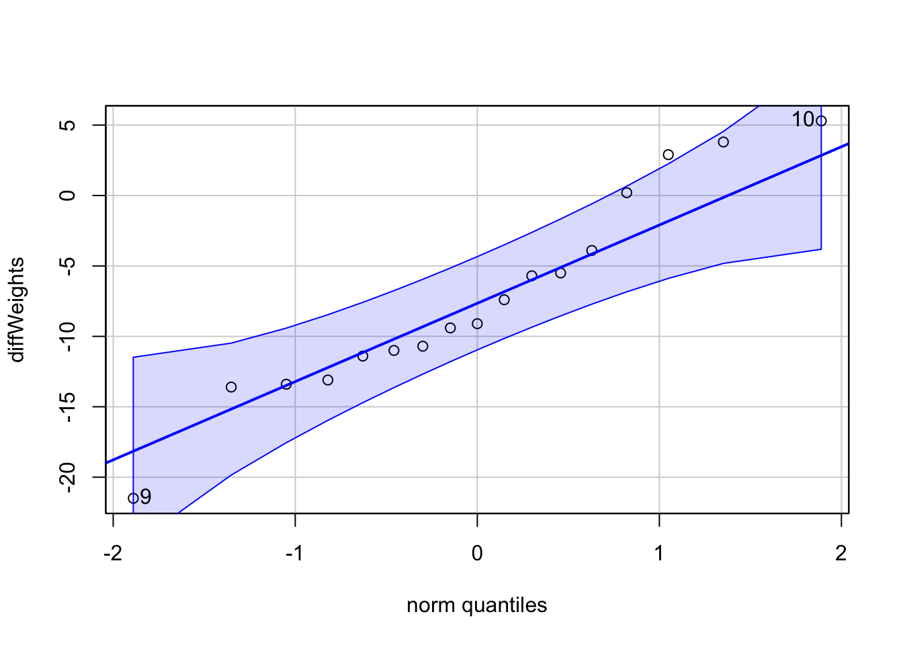
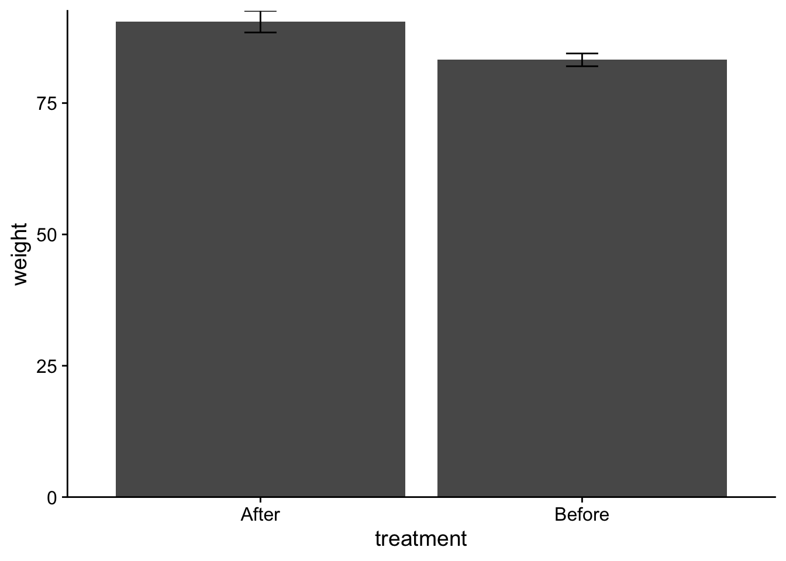
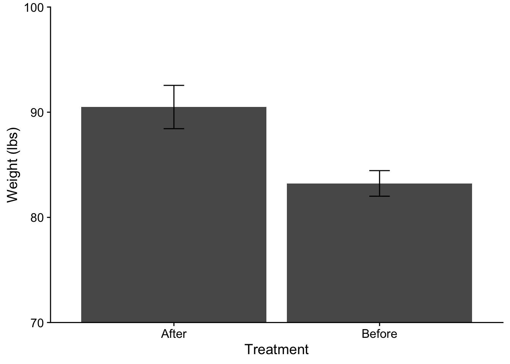
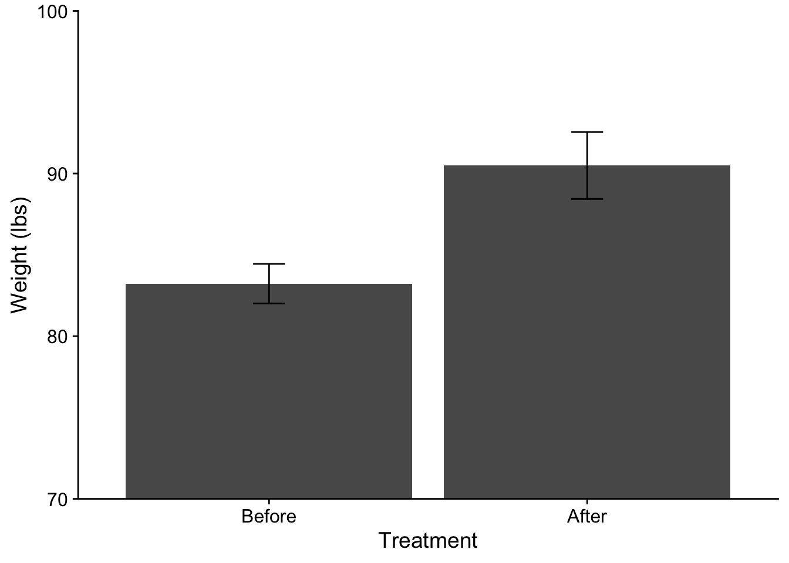
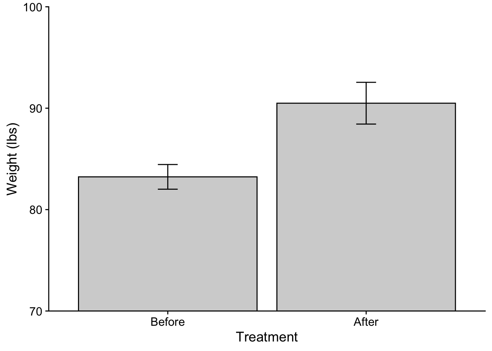
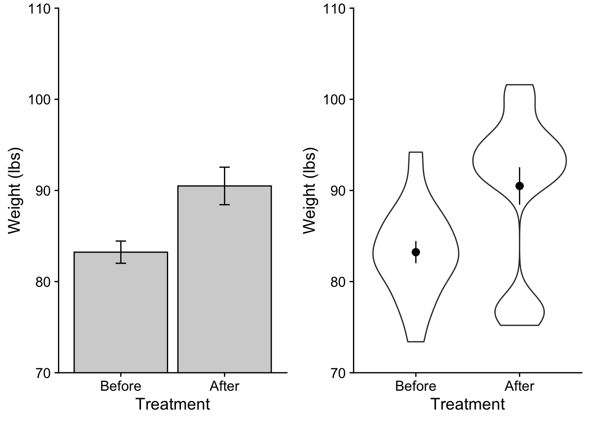
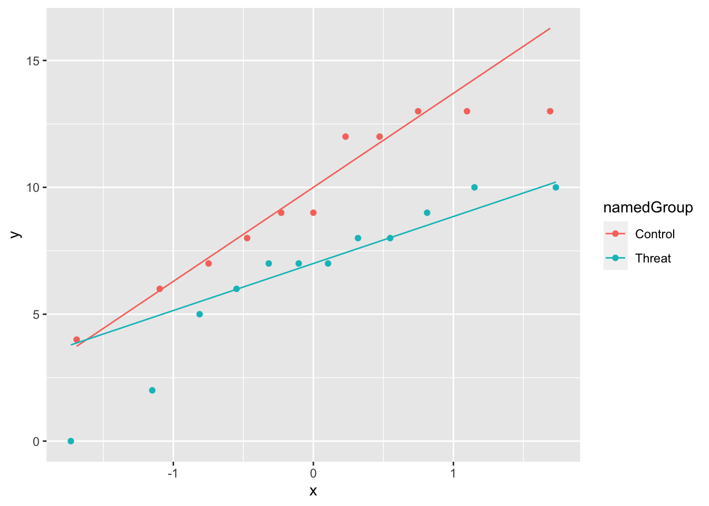

Testing differences in means / t-test
This week we cover when and how to conduct a \(t-test\). We use a t-test to assess whether the observed difference between sample means is greater than would be predicted be chance. Both the Navarro text and Poldrack text do a wonderful job of explaining t-tests conceptually so I will defer to those experts on matters of the underlying their statistical basis. Instead my goal this week is to walk through some examples on performing, interpreting, and reporting t-tests using R.
This walkthough assumes that the following packages are installed and loaded on your computer:
Things to consider before running the t-test
Before running a t.test there are a few practical and statistical considerations that must be taken. In fact, these considerations extend to every type of analysis that we will encounter for the remainder of the semester (and indeed the rest of your career) so it would be good to get in the habit of running through your checks. In what proceeds here I will walk step by step with how I condunct a t.test (while also highlighting certain decision points as they come up).
What is the nature of your sample data?
In other words where is the data coming from? Is it coming from a single sample of participants? Is it coming from multiple samples of the SAME participants? Is it coming from multiple groups of participants. This will not only determine what analysis you choose to run, but in also how you go about the business of preparing to run this analysis. Of course, truth be told this information should already be known before you even start collecting your data, which reinforces an important point, your central analyses should already be selected BEFORE you start collecting data! As you design your experiments you should do so in a way in which the statistics that you run are built into the design, not settled upon afterwards. This enables you to give the tests you perform the most power, as you are making predictions about the outcomes of your test a priori. This will become a major theme on the back half of the class, but best to introduce it now.
For this week, it will determine what test we will elect to perform. Let’s grab some sample data from an experiment by Hand, et al. (1994)
Hand, et al., 1994, reported on family therapy as a treatment for anorexia. There were 17 girls in this experiment, and they were weighed before and after treatment. The weights of the girls, in pounds, is provided in the data below:
anorexia_data <- read_delim("https://www.uvm.edu/~statdhtx/methods8/DataFiles/Tab7-3.dat",
"\t", escape_double = FALSE, trim_ws = TRUE)Rows: 17 Columns: 3
── Column specification ────────────────────────────────────────────────────────
Delimiter: "\t"
chr (1): ID
dbl (2): Before, After
ℹ Use `spec()` to retrieve the full column specification for this data.
ℹ Specify the column types or set `show_col_types = FALSE` to quiet this message.So what is known: we have 17 total participants from (hypothetically) the same population that are measured twice (once Before treatment, and once After treatment). Based upon the experimental question we need to run a paired-sample (matched-sample) test. (Although I’ll use this data to provide an example of a one-sample test later on).
What is the structure of your data file?
Before doing anything you should always take a look at your data:
# A tibble: 17 × 3
ID Before After
<chr> <dbl> <dbl>
1 01 83.8 95.2
2 02 83.3 94.3
3 03 86 91.5
4 04 82.5 91.9
5 05 86.7 100.
6 06 79.6 76.7
7 07 76.9 76.7
8 08 94.2 102.
9 09 73.4 94.9
10 10 80.5 75.2
11 11 81.6 77.8
12 12 82.1 95.5
13 13 77.6 90.7
14 14 83.5 92.6
15 15 89.9 93.8
16 16 86 91.7
17 17 87.3 98 So what do we have here, three columns:
-
ID: the participant number -
Before: participants’ weights before treatment -
After: participants’ weights after treatment
Most important for present purposes this data is in WIDE format—each line represents a participant. While this might be intuitive for tabluar visualization, many statistical softwares prefer when LONG format, where each line represents a single observation (or some mixed of WIDE and LONG like SPSS).
I spoke a little bit about this issue in Week 2, Walkthrough 0.
Getting data from WIDE to LONG
So the data are in WIDE format, each line has multiple observations of data that are being compared. Here both Before scores and After scores are on the same line. In order to make life easier for analysis and plotting in ggplot, we need to get the data into LONG format (Before scores and After scores are on different lines). This can be done using the pivot_longer() function from the tidyr package.
Before gathering, one thing to consider is whether or not you have a column that defines each subject. In this case we have ID. This tells R that these data are coming from the same subject and will allow R to connect these data when performing analysis. That said, for t.test() this is not crucially important—t.test() assumes that the order of lines represents the order of subjects, e.g., the first Before line is matched to the first After line. Later on when we are doing ANOVA, however, this participant column will be important an we will need to add if it is missing.
Using pivot_longer(): This function takes a number of arguments, but for us right now, the most important are data: your dataframe; cols: which columns to gather; names_to: what do you want the header of the collaped nonminal variables to be? Here, we might ask what title would encapsulate both Before and After. I’ll choose treatment ; values_to: what do the values represent, here I choose weight. I’m just going to overwrite the original data frame:
anorexia_data <- pivot_longer(anorexia_data,cols = c("Before","After"),names_to = "treatment", values_to = "weight")
anorexia_data# A tibble: 34 × 3
ID treatment weight
<chr> <chr> <dbl>
1 01 Before 83.8
2 01 After 95.2
3 02 Before 83.3
4 02 After 94.3
5 03 Before 86
6 03 After 91.5
7 04 Before 82.5
8 04 After 91.9
9 05 Before 86.7
10 05 After 100.
# ℹ 24 more rowsOk data is structured correctly, on to the next step.
Testing assumptions
Remember that you should always test to see if the data fit the assumptions of the test you intend to perform. In this case, we need to assess two things:
Is the data normally distributed?
Knowing the design of your experiment also has implications for testing your assumptions. For example, whether you have a paired (matched) sample design (e.g., two samples from the same participants) or an independent sample design (e.g., two groups) determines how you go about the business of testing the normality assumption. If you have an independent samples test, you test each sample separately, noting measures of skew, kurtosis, inspecting the qqPlot, and Shapiro-Wilkes test (though acknowledging that SW is very sensitive). However, if you are running a paired (matched) samples test, you need to be concerned with the distribution of the difference scores. In the present example we are comparing participants’ weights Before treatment to their weight After. This is a paired design, so I need to test the differences between each participant’s Before and After for normality.
First, let me filter() my data accordingly for Before and After (essentially creating separate vectors for each condition):
And now compute the difference scores, and run my assumption tests:
vars n mean sd median trimmed mad min max range skew kurtosis se
X1 1 17 -7.26 7.17 -9.1 -7.15 5.93 -21.5 5.3 26.8 0.18 -0.77 1.74
[1] 9 10
Shapiro-Wilk normality test
data: diffWeights
W = 0.9528, p-value = 0.5023What conclusions might we draw about normality?
Getting the descriptive stats and plotting the means.
Finally, as we will be performing a test of difference in means, it would be a good idea to get descriptive measures of means and variability for each group. Indeed, these data were already obatined when we used psych::describe() to assess the normality of each sample. Here I’ll just do it again to get these values:
Descriptive statistics by group
group: After
vars n mean sd median trimmed mad min max range skew kurtosis se
X1 1 17 90.49 8.49 92.6 90.77 3.85 75.2 101.6 26.4 -0.74 -0.93 2.06
------------------------------------------------------------
group: Before
vars n mean sd median trimmed mad min max range skew kurtosis se
X1 1 17 83.23 5.02 83.3 83.15 4.15 73.4 94.2 20.8 0.15 -0.29 1.22Typically along with the mean, you need to report a measure of variability of your sample. This can be either the SD, SEM, or if you choose the 95% CI, although this is more rare in the actual report. See the supplied HW example and APA examples for conventions on how to report these in your results section.
Plotting in ggplot
I’ve mentioned the limits and issues with plotting bar plots, but they remain a standard, so we will simply proceed using these plots. But I’ll note that boxplots, violin plots, bean plots, and pirate plots are all modern alternatives to bar plots and are easy to execute in ggplot(). Try a Google search.
In the meantime, to produce a bar plot in R we simply modify a few of the arguments that we are familiar width.
Here is the code for plotting these two groups:
ggplot(data = anorexia_data, aes(x=treatment, y=weight)) +
stat_summary(fun = "mean", geom = "col") +
stat_summary(fun.data = "mean_se", geom = "errorbar", width = .1) +
scale_y_continuous(expand = c(0,0)) +
theme_cowplot()
Breaking this down line-by-line:
ggplot(data = anorexia_data, aes(x=treatment, y=weight)): standard fare for starting aggplot.stat_summary(fun = "mean", geom = "col"):stat_summary()gets summary statistics and projects them onto the geom of your choice. In this case we are getting the mean values,fun = "mean"and using them to create a column plotgeom = "col".stat_summary(fun.data = "mean_se", geom = "errorbar", width = .1): here we are creating error bars,geom = "errorbar". Important to note here is that error bars require knowing three values: mean, upper limit, and lower limit. Whenever you are asking for a single value, like a mean, you usefun. When multiple values are needed you usefun.data. Herefun.data = "mean_se"requests Standard error bars. Other alternatives include 95% CI"mean_cl_normal"and Standard deviation"mean_sdl". Thewidthargument adjusts the width of the error bars.scale_y_continuous(expand = c(0,0)): TypicallyRwill do this strange thing where it places a gap bewteen the data and thex-axis. This line is a hack to remove this default. It says along the y-axis add0expansion (or gap).theme_cowplot(): quick APA aesthetics.
You may also feel that the zooming factor is off. This may especially be true in cases where there is little visual discrepency between the bars. To “zoom in” on the data you can use coord_cartesian(). For example, you might want to only show the range between 70 lbs and 100 lbs. When doing this, be careful not to truncate the upper limits of your bars and importantly your error bars.
ggplot(data = anorexia_data, aes(x=treatment, y=weight)) +
stat_summary(fun = "mean", geom = "col") +
stat_summary(fun.data = "mean_se", geom = "errorbar", width = .1) +
scale_y_continuous(expand = c(0,0)) +
theme_cowplot() +
coord_cartesian(ylim = c(70,100))Additionally, to get this into true APA format I would need to adjust my axis labels. Here capitalization is needed. Also, because the weight has a unit measure, I need to be specific about that:
ggplot(data = anorexia_data, aes(x=treatment, y=weight)) +
stat_summary(fun = "mean", geom = "col") +
stat_summary(fun.data = "mean_se", geom = "errorbar", width = .1) +
scale_y_continuous(expand = c(0,0)) +
theme_cowplot() +
coord_cartesian(ylim = c(70,100)) +
xlab("Treatment") +
ylab("Weight (lbs)")
Finally, you may have notice that the order of Treatment on the plot is opposite of what we might like to logically present. In this case the “After” data comes prior to the “Before” data on the x-axis. This is because R defaults to alphabetical order when loading in data. To correct this I can use scale_x_discrete() and specify the order that I want in limits:
ggplot(data = anorexia_data, aes(x=treatment, y=weight)) +
stat_summary(fun = "mean", geom = "col") +
stat_summary(fun.data = "mean_se", geom = "errorbar", width = .1) +
scale_y_continuous(expand = c(0,0)) +
theme_cowplot() +
coord_cartesian(ylim = c(70,100)) +
xlab("Treatment") +
ylab("Weight (lbs)") +
scale_x_discrete(limits=c("Before","After"))
Alternatively I can correct the order of the levels of a factor within the dataframe itself using fct_relevel() (this gets loaded with tidyverse). Note that here I am overwriting the original treatment column. If you do this proceed at your own risk! You could also just mutate a new column if you would rather not overwrite.
anorexia_data$treatment <- fct_relevel(anorexia_data$treatment, "Before", "After")
ggplot(data = anorexia_data, aes(x=treatment, y=weight)) +
stat_summary(fun = "mean", geom = "col",
fill = "lightgray", color = "black") + # adding some color mods here.
stat_summary(fun.data = "mean_se", geom = "errorbar", width = .1) +
scale_y_continuous(expand = c(0,0)) +
theme_cowplot() +
coord_cartesian(ylim = c(70,100)) +
xlab("Treatment") +
ylab("Weight (lbs)")
All good (well maybe check with Sierra first)! One other thing to consider (although please do not worry about it here) is the recent argument that when dealing with repeated measures data you need to adjust you error bars. See this pdf by Richard Morey (2005) for more information on this issue. We’ll revisit this issue when running Repeated Measures ANOVA.
An aside… other types of plots
As I mentioned barplots (especially those that use standard error bars) have more recently come under criticism for “hiding” the true name of the data. There is currently a movement to make data more transparent using other kinds of plots that convey more information about your sample. For example let’s contrast out barplot from above with a combination “pointrange” and violin plot. The pointrange simply provides the mean as a point with error bars extending as specified (here I choose standard error). The violin plot is essentially a histogram of the data turned on its side, centered on the mean, and then mirrored… it gives us info about the TRUE distribution of scores.
Let’s take a look side by side
barplot <- ggplot(data = anorexia_data, aes(x=treatment, y=weight)) +
stat_summary(fun = "mean", geom = "col",
fill = "lightgray", color = "black") + # adding some color mods here.
stat_summary(fun.data = "mean_se", geom = "errorbar", width = .1) +
scale_y_continuous(expand = c(0,0)) +
theme_cowplot() +
coord_cartesian(ylim = c(70,110)) +
xlab("Treatment") +
ylab("Weight (lbs)")
# note that order matters. I need to do the violin before the pointrange or else the violin will "paint over" the pointrange.
point_violin_plot <- ggplot(data = anorexia_data, aes(x=treatment, y=weight)) +
geom_violin() +
stat_summary(fun.data = "mean_se", geom = "pointrange", color = "black") + # adding some color mods here.
scale_y_continuous(expand = c(0,0)) +
theme_cowplot() +
coord_cartesian(ylim = c(70,110)) +
xlab("Treatment") +
ylab("Weight (lbs)")
cowplot::plot_grid(barplot, point_violin_plot)
As you can see the second plot gives me more information about what’s truly going on with my data.
Performing the t-test (Paired sample t-test)
Okay, now that we’ve done all of our preparation, we’re now ready to perform the test. We can do so using the t.test() function. In this case, the experimental question warrants a paired samples t-test. Given that our Levene’s test failed to reject the null, we will assume that our variances are equal.
Since we’ve got long-format data we will use the formula syntax. This reads “predicting changes in weight as a function of treatment.
Paired t-test
data: weight by treatment
t = -4.1802, df = 16, p-value = 0.0007072
alternative hypothesis: true mean difference is not equal to 0
95 percent confidence interval:
-10.948840 -3.580571
sample estimates:
mean difference
-7.264706 The output provides us with our \(t\) value, the \(df\) and the \(p\) value. It also includes a measure of the 95% CI, and the mean difference. Remember that the null hypothesis is that there is no difference between our two samples. In the case of repeated measures especially, it makes sense to think of this in terms of a difference score of change, where the null is 0. The resulting interpretation is that on average participants’ weight increased 7.26 pounds due to the treatment, with a 95% likelihood that the true mean change is between 3.58 lbs and 10.95 lbs. Important for us is that 0 is not in the 95% CI, reinforcing that there was indeed a non-zero change (rejecting the null).
Other \(t\) tests:
One sample:
The data in our example warranted running a paired t-test. However, as noted we can run a t.test() to compare a single sample to a single value. For example it might be reasonable to ask whether or not the 17 adolescent girls that Hand, et al., 1994 treated were different from what would be considered the average weight of a teenaged girl. A quick Google search suggests that the average weight of girls 12-17 in 2002 was 130 lbs. How does this compare to Hand et al.’s participants Before treatment? We can run a one sample t-test to answer this question:
beforeTreatment <- filter(anorexia_data,treatment=="Before")
t.test(beforeTreatment$weight, mu = 130)
One Sample t-test
data: beforeTreatment$weight
t = -38.44, df = 16, p-value < 2.2e-16
alternative hypothesis: true mean is not equal to 130
95 percent confidence interval:
80.65007 85.80876
sample estimates:
mean of x
83.22941 Yes, this group of girls was significantly underweight compared to the national average.
Independent samples example
We run an independent samples t-test when we have reason to believe that the data in the two samples is NOT meaningfully related in any fashion. Consider this example regarding Joshua Aronson’s work on stereotype threat:
Joshua Aronson has done extensive work on what he refers to as “stereotype threat,” which refers to the fact that “members of stereotyped groups often feel extra pressure in situations where their behavior can confirm the negative reputation that their group lacks a valued ability” (Aronson, Lustina, Good, Keough, Steele, & Brown, 1998). This feeling of stereo- type threat is then hypothesized to affect performance, generally by lowering it from what it would have been had the individual not felt threatened. Considerable work has been done with ethnic groups who are stereotypically reputed to do poorly in some area, but Aronson et al. went a step further to ask if stereotype threat could actually lower the performance of white males—a group that is not normally associated with stereotype threat.
Aronson et al. (1998) used two independent groups of college students who were known to excel in mathematics, and for whom doing well in math was considered important. They assigned 11 students to a control group that was simply asked to complete a difficult mathematics exam. They assigned 12 students to a threat condition, in which they were told that Asian students typically did better than other students in math tests, and that the purpose of the exam was to help the experimenter to understand why this difference exists. Aronson reasoned that simply telling white students that Asians did better on math tests would arousal feelings of stereotype threat and diminish the students’ performance.
Here we have two mutually exclusive groups of white men, those that are controls and those under induced threat. Importantly we have no reason to believe that any one control man’s score is more closely tied to any individual experimental group counterpart than any others (we’ll return to this idea in a bit).
Here is the data:
stereotype_data <- read_delim("https://www.uvm.edu/~statdhtx/methods8/DataFiles/Tab7-7.dat", delim = "\t")Rows: 23 Columns: 3
── Column specification ────────────────────────────────────────────────────────
Delimiter: "\t"
chr (1): ID
dbl (2): Score, Group
ℹ Use `spec()` to retrieve the full column specification for this data.
ℹ Specify the column types or set `show_col_types = FALSE` to quiet this message.As before, let’s take a look at the file structure:
# A tibble: 23 × 3
ID Score Group
<chr> <dbl> <dbl>
1 01 4 1
2 02 9 1
3 03 12 1
4 04 8 1
5 05 9 1
6 06 13 1
7 07 12 1
8 08 13 1
9 09 13 1
10 10 7 1
# ℹ 13 more rowsI want to look at this example as it give is an opportunity to deal with another common issue in data cleaning. If you take a look at Group you see it’s either 1 or 2. In this case Group 1 are the control subjects and Group 2 are the threat subjects. Using numbers instead of names to identify levels of a factor is a convention from older methods and software. In more modern software you don’t need to do this sort of number coding (the software works this out in the background).
If you want to change this, you can use the recode_factor() function from dplyr package in the tidyverse (https://dplyr.tidyverse.org/reference/recode.html). For what it’s worth there are several other ways to do this including a recode() function in car. See http://rprogramming.net/recode-data-in-r/ for examples.
Here I’m just going to mutate a new column, namedGroup column with the recoded names:
stereotype_data <- stereotype_data %>%
mutate("namedGroup" = dplyr::recode_factor(Group,
"1"="Control",
"2"="Threat")
)
stereotype_data# A tibble: 23 × 4
ID Score Group namedGroup
<chr> <dbl> <dbl> <fct>
1 01 4 1 Control
2 02 9 1 Control
3 03 12 1 Control
4 04 8 1 Control
5 05 9 1 Control
6 06 13 1 Control
7 07 12 1 Control
8 08 13 1 Control
9 09 13 1 Control
10 10 7 1 Control
# ℹ 13 more rowsAn now to run the requisite assumption tests. Note that in this case I am running an Indepednent samples test, so I need to test the assumptions on each sample separately. Here I’m going be a little more critical about how I test for normality.
Using psych::describeBy:
Descriptive statistics by group
group: Control
vars n mean sd median trimmed mad min max range skew kurtosis
ID* 1 11 6.00 3.32 6 6.00 4.45 1 11 10 0.00 -1.53
Score 2 11 9.64 3.17 9 9.89 4.45 4 13 9 -0.31 -1.48
Group 3 11 1.00 0.00 1 1.00 0.00 1 1 0 NaN NaN
namedGroup* 4 11 1.00 0.00 1 1.00 0.00 1 1 0 NaN NaN
se
ID* 1.00
Score 0.96
Group 0.00
namedGroup* 0.00
------------------------------------------------------------
group: Threat
vars n mean sd median trimmed mad min max range skew kurtosis
ID* 1 12 6.50 3.61 6.5 6.5 4.45 1 12 11 0.00 -1.50
Score 2 12 6.58 3.03 7.0 6.9 2.22 0 10 10 -0.86 -0.39
Group 3 12 2.00 0.00 2.0 2.0 0.00 2 2 0 NaN NaN
namedGroup* 4 12 2.00 0.00 2.0 2.0 0.00 2 2 0 NaN NaN
se
ID* 1.04
Score 0.87
Group 0.00
namedGroup* 0.00Using DescTools:
control group
control_group <- stereotype_data %>% filter(namedGroup=="Control")
control_skew <- DescTools::Skew(x=control_group$Score,method = 2,conf.level = .95,ci.type = "bca",R = 1000)
control_skew_ses <- (control_skew[3] - control_skew[2])/3.92
control_skew[1]/control_skew_ses skew
-0.6060895 control_kurt <- DescTools::Kurt(x=control_group$Score,method = 2,conf.level = .95,ci.type = "bca",R = 1000)
control_kurt_ses <- (control_kurt[3] - control_kurt[2])/3.92
control_kurt[1]/control_kurt_ses kurt
-1.094786 threat group
threat_group <- stereotype_data %>% filter(namedGroup=="Threat")
threat_skew <- DescTools::Skew(x=threat_group$Score,method = 2,conf.level = .95,ci.type = "bca",R = 1000)
threat_skew_ses <- (threat_skew[3] - threat_skew[2])/3.92
threat_skew[1]/threat_skew_ses skew
-1.867989 threat_kurt <- DescTools::Kurt(x=threat_group$Score,method = 2,conf.level = .95,ci.type = "bca",R = 1000)
threat_kurt_ses <- (threat_kurt[3] - threat_kurt[2])/3.92
threat_kurt[1]/threat_kurt_ses kurt
0.4176778 This is a pain… can we make a function for this!!!!
QQ-Plot
pacman::p_load(qqplotr)
ggplot(stereotype_data, aes(sample=Score, group=namedGroup, color=namedGroup)) +
geom_qq() + geom_qq_line()
Homogeniety of Variance:
While the paired samples test doesn’t make this assumption, the Independence samples test assumes the variability of scores for the two groups is roughly homogeneous.
For a t-test this can be tested by using the leveneTest() from the car package:
# using long-format enter as a formula:
car::leveneTest(Score~namedGroup, data=stereotype_data, center="mean")Levene's Test for Homogeneity of Variance (center = "mean")
Df F value Pr(>F)
group 1 0.4306 0.5188
21 You’ll note above I elected to mean center my samples. This is consistent with typical practice although “median” centering may be more robust.
Levene's Test for Homogeneity of Variance (center = median)
Df F value Pr(>F)
group 1 0.4639 0.5033
21 T-test Given that my obtained Pr(>F), or p-value of Levene’s F-test, is greater than .05, I may elect to assume that my variances are equal. However, if you remained skeptical, there are adjustments that you may make. This includes adjusting the degrees of freedom according to Welch-Satterthwaite recommendation (see below). Recall later on that we are looking at our obtained \(t\) value with respect to the number of \(df\). This adjustment effectively reduces the \(df\) in turn making your test more conservative.
The Levene’s test failed to reject the null so I may proceed with my t.test assuming variances are equal. Note that paired=FALSE for independent sample tests:
Two Sample t-test
data: Score by namedGroup
t = 2.3614, df = 21, p-value = 0.02795
alternative hypothesis: true difference in means between group Control and group Threat is not equal to 0
95 percent confidence interval:
0.3643033 5.7417573
sample estimates:
mean in group Control mean in group Threat
9.636364 6.583333 This output gives us the \(t\)-value, \(df\) and \(p\)-value. Based on this output I may conclude that the mean score in the Control group is significantly greater than the Threat group.
Just as an example, let’s set var.equal to FALSE:
Welch Two Sample t-test
data: Score by namedGroup
t = 2.3565, df = 20.614, p-value = 0.02843
alternative hypothesis: true difference in means between group Control and group Threat is not equal to 0
95 percent confidence interval:
0.3556143 5.7504463
sample estimates:
mean in group Control mean in group Threat
9.636364 6.583333 Comparing the outputs you see that in this case R has indicated that it has run the test with the Welsh correction. Note that this changes the \(df\) and consequently the resulting \(p\) value. That this change was negligible reinforces that the variances were very similar to one another. However in cases where they are not close to one another you may see dramatic changes in \(df\).
In R, the t.test() function sets var.equal=FALSE by default. Why you ask? Well, you can make the argument that the variances are ALWAYS unequal, its only a matter of degree. Assuming variances are unequal makes your test more conservative, meaning that if the test suggests that you should reject the null, you can be slightly more confident that you are not committing Type I error. At the same time, it could be argued that setting your var.equal=TRUE in this case (where the Levene test failed to reject the null) makes your test more powerful, and you should take advantage of that power to avoid Type II error.
Independent or Paired Sample?
It is safe to assume that anytime that you are collecting data samples from the same person at two different points in time that you need to run a paired-samples test. However, it would not be safe to assume that if the samples are coming from different groups of people that you always run an independent samples test. Remember the important qualifier mentioned above: That there no reason to believe that any one participant in the first group is is more closely related to any single counterpart in the second group than the remaining of others. In our Independent test example we have no reason to assume this is the case, we assume that members of the Control and Threat groups were randomly selected. But what if we instead recruited brothers or twins? In this case, it may make sense to treat members of the two groups as paired; brothers have a shared history (education, socio-economic level, family dynamic, etc) that would make their scores more likely to be related to one another than by random chance.